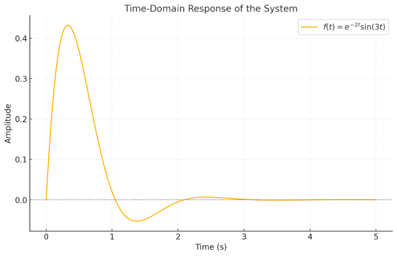
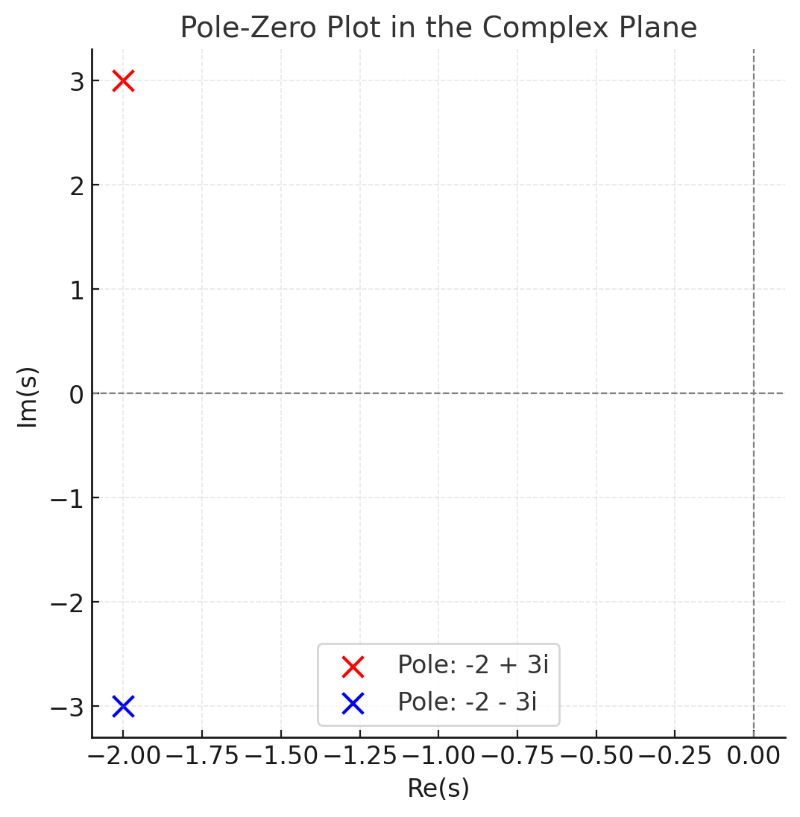

工程數學為什麼需要用到虛數 <<
Previous Next >> 結合Github連動網站
視覺化分析
我請ChatGPT利用python程式使用數學、圖形分析的方式來告訴我如果在火箭設計上是不是也可以使用工程數學的方式來設計出火箭。此概念也可以用在火箭設計系統分析穩定，並使用圖形的方式來了解系統模擬是否穩定。
import numpy as np
import matplotlib.pyplot as plt
# 定義時間範圍
time = np.linspace(0, 5, 1000)
# 定義時間域響應 f(t) = e^(-2t) * sin(3t)
a = -2 # 衰減係數
omega = 3 # 振盪頻率
f_t = np.exp(a * time) * np.sin(omega * time)
# 繪製時間域圖像
plt.figure(figsize=(10, 6))
plt.plot(time, f_t, label=r"$f(t) = e^{-2t}\sin(3t)$")
plt.axhline(0, color='gray', linestyle='--', linewidth=0.8)
plt.title("Time-Domain Response of the System", fontsize=14)
plt.xlabel("Time (s)", fontsize=12)
plt.ylabel("Amplitude", fontsize=12)
plt.grid(alpha=0.3)
plt.legend(fontsize=12)
plt.show()
# 繪製極點圖（複平面）
plt.figure(figsize=(6, 6))
plt.axhline(0, color='gray', linestyle='--', linewidth=0.8)
plt.axvline(0, color='gray', linestyle='--', linewidth=0.8)
plt.scatter([-2], [3], color='red', label="Pole: -2 + 3i", s=100)
plt.scatter([-2], [-3], color='blue', label="Pole: -2 - 3i", s=100)
plt.title("Pole-Zero Plot in the Complex Plane", fontsize=14)
plt.xlabel("Re(s)", fontsize=12)
plt.ylabel("Im(s)", fontsize=12)
plt.grid(alpha=0.3)
plt.legend(fontsize=12)
plt.show()


以上是視覺化的結果：
-
時間域響應圖：
- 你可以看到 在時間上是一個振盪衰減的波形。
- 隨著時間推進，振幅指數式減小，這表明系統是穩定的。
-
極點圖（複平面）：
- 極點位於 ，橫坐標（實部）為 ，表示衰減速度；縱坐標（虛部）為 ，表示振盪頻率。
- 極點位於複平面的左半平面，這說明系統是穩定的（振幅逐漸減少）。
火箭發射系統穩定性分析
這些概念確實可以應用在火箭發射系統的穩定性分析中。例如：
-
姿態控制系統（Attitude Control System）：
- 火箭在飛行過程中需要控制俯仰、偏航和滾轉角度，這些都是動態系統。
- 透過分析系統的拉普拉斯極點，可以確定控制系統是否穩定，是否會發生無限振盪或震盪衰減。
-
推力控制（Thrust Control）：
- 當火箭的推力系統有延遲或振盪時，可以用類似的分析方法來優化控制器設計，使系統更穩定。
-
振動分析：
- 火箭結構在推力作用下會產生彈性振動，這些振動也可以用複數極點來描述和分析，確保振動不會導致結構失效。
工程數學為什麼需要用到虛數 <<
Previous Next >> 結合Github連動網站